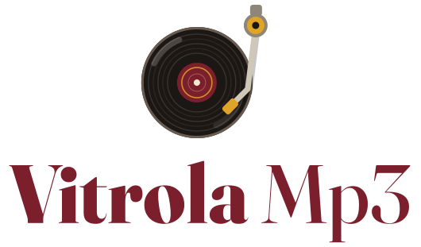

Vitrola Mp3 — logo
Conceito A refinado: o vinil clássico. Esta página reúne o símbolo, as variações para cada tamanho, o ícone do Android, as assinaturas com o nome e a paleta base. É a referência para o style guide.
Símbolo
Toca-discos, em uma olhada
- Disco com sulcos alternados e dois reflexos, que dão volume sem gradiente.
- Selo vinho com anel mostarda, a assinatura de cor da marca.
- Braço com contrapeso, base e cápsula. A sombra leve descola o braço do disco.
- Borda clara no disco, para ele não sumir em fundos escuros.
O botão mostra a animação prevista para o app: o braço desce e o disco gira.
Construção
- Disco
- Raio 70 numa grade de 200. Deslocado para a esquerda e para baixo, para abrir espaço ao braço.
- Selo
- Raio 25, cerca de 1/3 do disco, como num LP de verdade.
- Braço
- Vai do pivô (canto superior direito) até a agulha no terço externo do disco, onde a música começa.
- Traço
- Braço com espessura 7 no detalhado e 10 no simplificado.
Tamanhos: detalhado × simplificado
Abaixo de 48px, o detalhado vira "ruído". O simplificado tem menos sulcos, traços mais grossos e selo maior, e é o que vai na barra de status, nas notificações e no favicon.
Ícone adaptativo do Android
Cada fabricante corta o ícone num formato diferente. O símbolo fica dentro da zona segura central (66 de 108 unidades) e aparece inteiro em todas as máscaras.
Ícone temático (Android 13+)
Versão de uma cor só, que o Android pinta conforme o papel de parede do usuário. Ela também serve para a notificação da música.
Assinaturas



Nome: Vitrola em Fraunces ExtraBold e Mp3 em Fraunces Medium, no mesmo tamanho. A diferença de peso dá hierarquia sem precisar de outra cor. Fraunces é uma serifa "macia", com cara de capa de disco dos anos 70, mas moderna, e é gratuita (Google Fonts). Nos arquivos exportados, o texto já está em contorno e não depende da fonte instalada.
Área de respiro
Paleta da marca
Esta é a paleta base da logo. O style guide vai expandi-la com tons de interface, estados e o tema escuro.